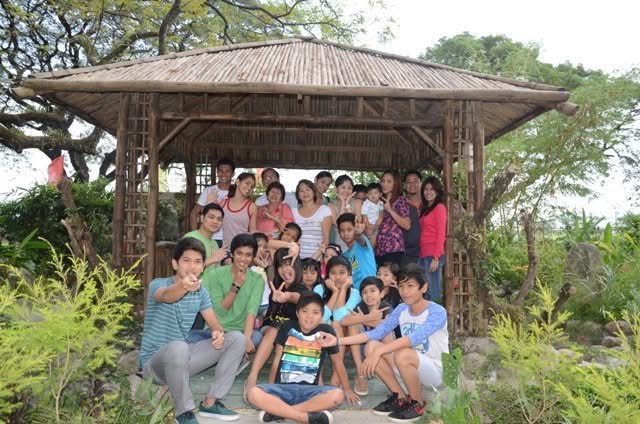
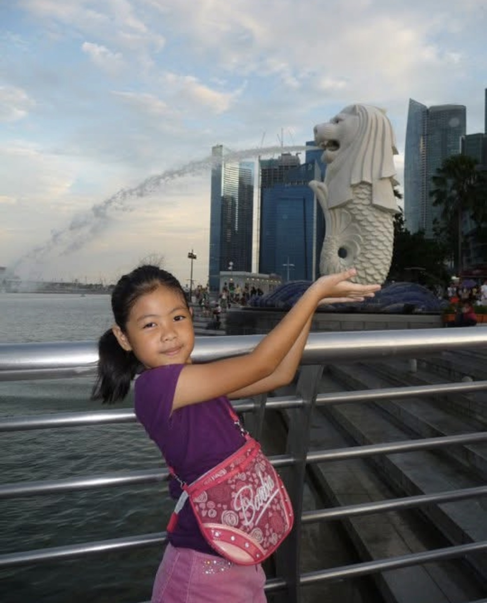
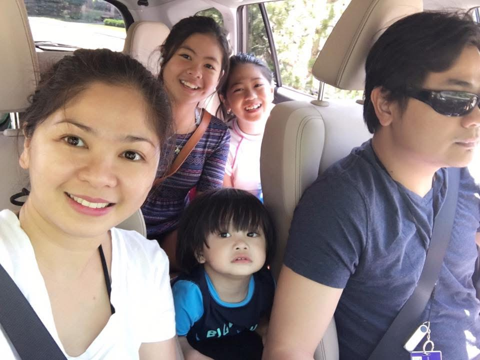
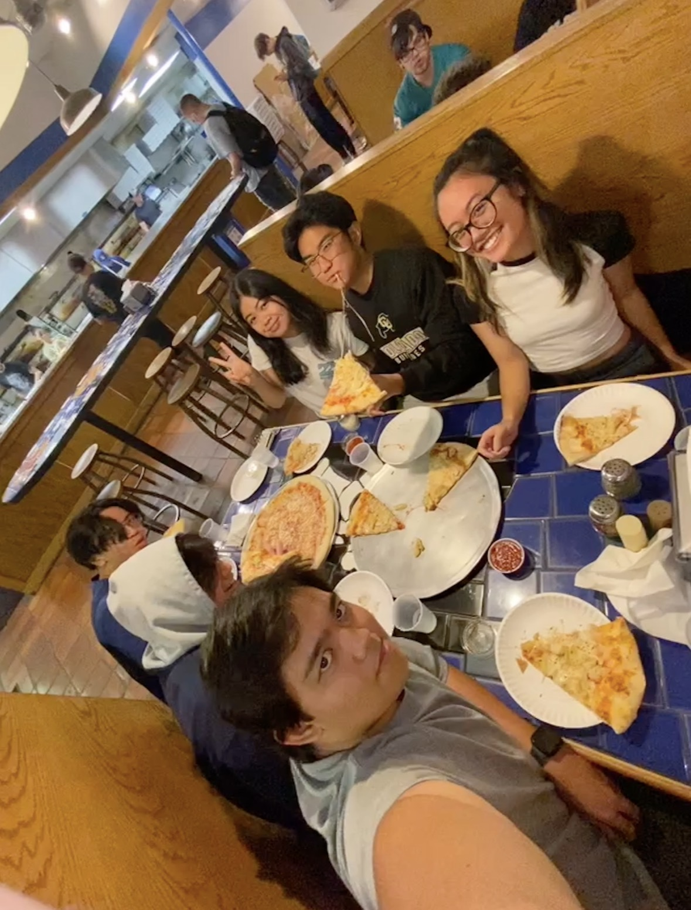

My Roots
This is where my story begins, as a little girl born in the Philippines and connected to the roots that shaped me first.
A journey through my roots, culture, and the places that shaped who I am.
This is where my story begins, as a little girl born in the Philippines and connected to the roots that shaped me first.

My Filipino identity has always been grounded in family, where love, closeness, and togetherness taught me what home truly feels like.

I spent most of my childhood in Singapore, and those years gave me some of my earliest memories, curiosity, and sense of adventure.

As my family's journey continued, moving and growing together taught me how to adapt while still holding onto the people who matter most.

Growing up in America helped shape who I am today through the friendships, experiences, and community that became part of my everyday life.
Now, I carry every place I have been with me, and each part of my journey continues to shape the person I am becoming.